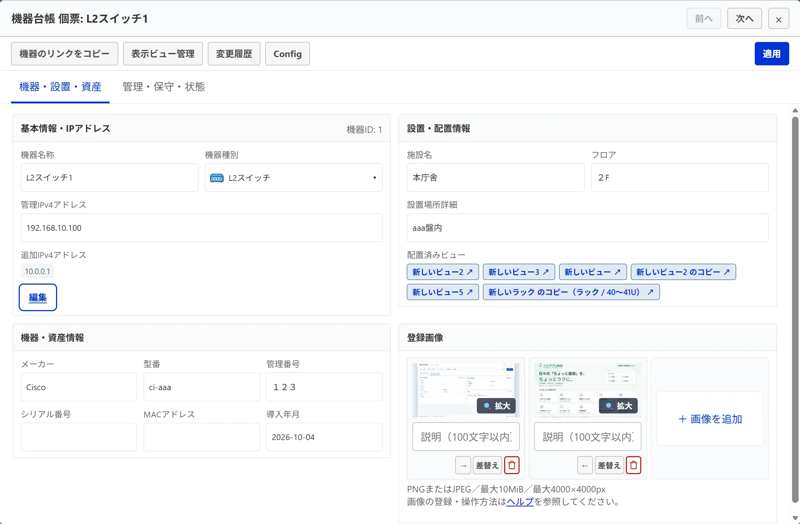
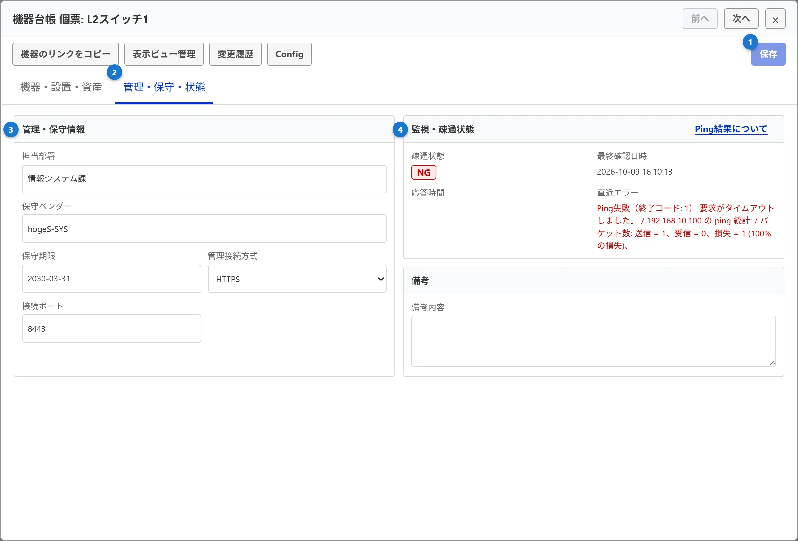
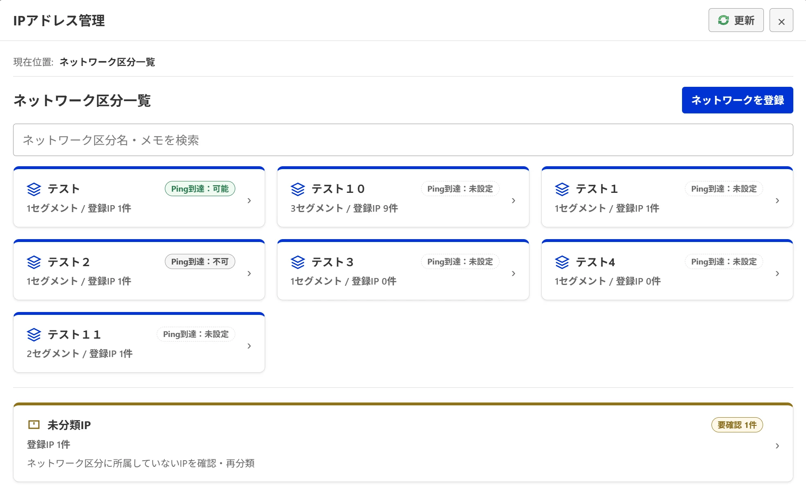
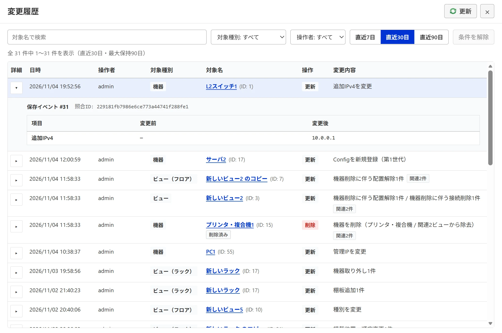
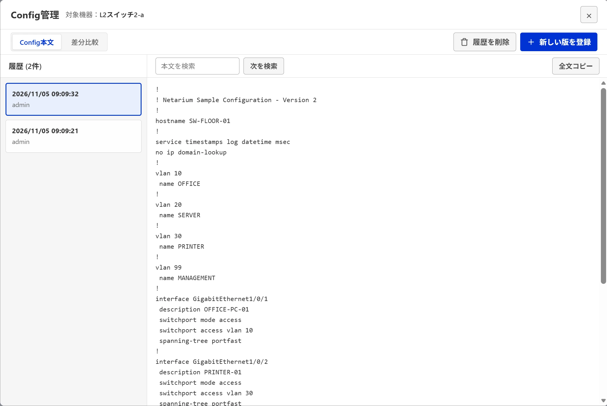
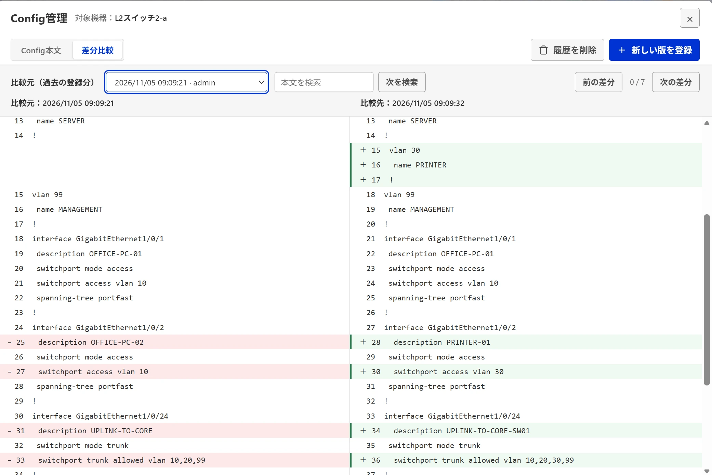
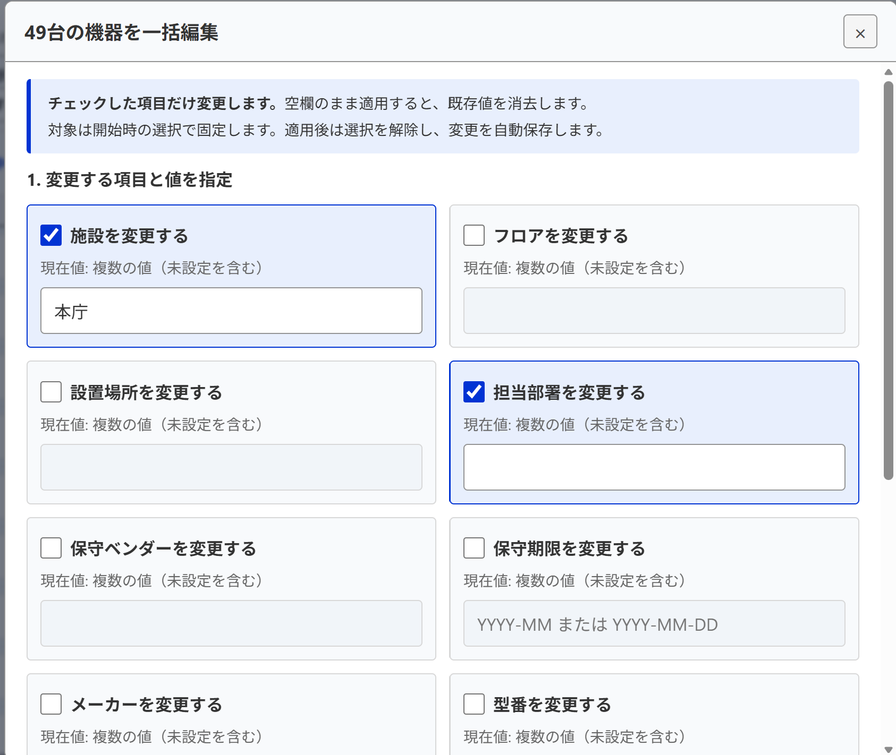
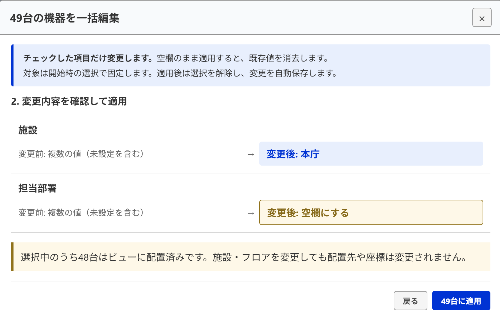

機器・台帳の操作ガイド
機器プロパティパネル、機器台帳、個票シート、IPアドレス管理、変更履歴、Config保管、Ping疎通確認、および一括編集の手順を説明します。
機器情報の編集と登録画像
キャンバス上の機器をクリックすると右側にプロパティパネルが開き、基本情報・設置情報・管理保守情報を確認・編集できます。
- 選択モードでキャンバス上の機器をクリックします。
- 右パネルで必要な見出し（「基本情報」「設置情報」「機器・資産情報」「管理・保守情報」など）を開いて各項目を入力します。
- パネル下部の「適用」を押すと入力が検証され、自動保存されます。
- 機器画像: 「機器・資産情報」の登録画像枠（最大3枚）から「＋ 画像を追加」でPNG/JPEG（10MiB以下、長辺4000px以下）をアップロードできます。管理者は画像の並べ替えや削除も可能です。
機器個票の編集と複数IP
機器台帳で「詳細」を押すか、キャンバス上で機器をダブルクリックすると、1台の詳細な個票シートが開きます。




複数IPアドレスの追加・変更・削除
1台の機器に対して、主IP（管理IPv4）に加えて複数の追加IP（サービス用、VIP、管理用セカンダリ等）を登録できます。
- 「機器・設置・資産」タブの「追加IPv4アドレス」欄で、「編集」（未登録時は「IPアドレスを追加」）を押します。
- 入力行にIPv4アドレスと用途ラベル（任意）を入力します。
- 続けて登録する場合は「IPアドレスを追加」を押して行を増やします。
- 不要なIPは行右端の赤いゴミ箱アイコンを押して削除します。
- 「閉じる」を押すとサマリー表示へ戻り、上部の「適用」を押して自動保存します。
- セグメント所属の判定: IPアドレスを入力すると、一致するセグメント候補が1件の場合は自動選択され、複数候補がある場合は候補選択・確認が必要となります。該当する候補がない場合は「未分類」として登録されます。
| IP重複の条件 | 保存時の判定と動作 |
|---|---|
| 同一機器内で同じIP | 登録エラーとなり保存できません。 |
| 同一ネットワーク区分内の別機器で新規重複 | 登録拒否となり保存できません。 |
| 異なるネットワーク区分間の同じIP | 独立したアドレス空間として登録・保存可能です。 |
| 未分類を含む新規重複 | 警告が表示され、明示的な確認が必要です（未確認の場合は保存が拒否されます）。 |
| 既存データの重複 | 既存の重複状態は原則として保持されます。 |
注意（保存判定とPingスキップの区別）: 上記の重複判定はデータの保存可否に関する検証です。保存済みのデータであっても、同一IPが複数の到達可能区分に存在し通信先が特定できない場合は、Ping実行時に安全のため送信が自動スキップされます。
個票から機器を完全削除する（管理者のみ）
- 対象機器の個票を開き、上部操作バー左端の「機器を完全削除」を押します。
- 未適用の入力がある場合は、「適用」で保存するか、「変更を取り消す」で入力を破棄します。「編集を続ける」を選ぶと削除を中止します。適用時に保存失敗や競合があれば削除へ進みません。
- 確認画面の機器名を確認して削除します。全ビューの配置と関連する接続も完全削除します。キャンセルすると機器は削除しません。
削除を受け付けると個票が閉じます。画面下部の保存状態が「保存済み」になったことを確認してください。保存失敗や競合が出た場合は、保存状態の案内に従って復旧してください。
機器へ管理接続する
右パネルや個票の「機器へ接続」から、管理画面や外部SSHクライアントを直接呼び出せます。
- HTTP / HTTPS: 登録された管理用IP・ポートのURLをブラウザの別タブで開きます。
- SSH: 端末のOSに関連付けられた外部SSHクライアント（
ssh://プロトコル）を起動します。
WindowsでTera Term等を使用する場合は、SSH接続画面の「？接続方法」を開き、プロトコルの関連付け手順を確認してください。
機器台帳・ダッシュボード・品質診断
登録された全機器の一覧管理と、システム全体の運用状態を集約表示する機能です。
- 機器台帳: 上部バーの「台帳」ボタンから開きます。全機器の検索、列プリセット切り替え、複数条件絞り込み、CSV入出力、一括編集、選択機器のPingを実行できます。
- ダッシュボード（管理者のみ）: 上部バーから開きます。機器総数、監視状態（OK / NG / 未確認）、保守期限の見通し、施設・種別の内訳を集計表示します。
- データ品質診断（管理者のみ）: 上部バーの「管理」→「データ品質診断」から、未配置機器、IP重複、未設定項目などの不整合を検出し、修正導線を提供します。
IPアドレス管理（ネットワーク区分）
組織内で利用されているIPv4ネットワーク体系を「ネットワーク区分」と「セグメント（CIDR）」として階層管理し、機器の所属やPing疎通到達性を制御します。閲覧者はネットワーク区分・セグメント・所属IPの参照が可能で、登録・編集・再分類は管理者のみ行えます。


- 上部バーの「管理」→「IPアドレス管理」を開きます（閲覧者も参照可能）。
- ネットワーク区分の登録（管理者のみ）: 「ネットワークを登録」を押し、区分名（例: 基幹系、情報系、庁内LAN）、メモ、およびPing到達性（「到達可能」「到達不可」「未設定」）を設定して保存します。
- セグメント（CIDR）の登録（管理者のみ）: 区分カードをクリックして詳細を開き、「セグメントを追加」からCIDR（例:
192.168.10.0/24）と用途を入力して登録します。 - 登録IPの確認: 各セグメントを開くと、所属する機器名・IPアドレス・種別が一覧表示されます。
- 未分類IPの再分類（管理者のみ）: 区分一覧下部の「未分類IP」を開くと、セグメントに属していないIPを持つ機器が一覧表示されます。セグメント登録後に所属を更新できます。
Ping到達性の設定と注意: 「到達不可」は不要なPing送信を安全にスキップするための設定であり、機器自体の故障を意味するものではありません。なお、Ping到達性は運用者による運用の宣言であり、設定してもサーバーOSの通信経路や送信元インターフェース・VRFが自動変更されるものではなく、実際の到達経路や応答機器の同一性が保証されるわけではありません。
変更履歴の確認
機器の追加・更新・削除、ビューの配置変更、接続の作成・削除などの操作イベントを最大90日間保持し、変更前後の差分を確認できます。


- 上部バーの「管理」→「変更履歴」、または機器個票の「変更履歴」ボタンから開きます。
- 上部ツールバーで期間（「直近7日」「直近30日」「直近90日」）、対象種別（機器／ビュー／接続など）、操作者、対象名で絞り込みます。
- 一覧の行をクリックするか左端の「▶」を押すと、変更イベントが展開され、「項目」「変更前」「変更後」の差分が表示されます。
- 対象名のリンクをクリックすると、該当機器の個票やビューへ直接移動できます。
ログの区別: 変更履歴は構成データの編集差分を追跡する機能です。ログインやAPI実行を記録する「監査ログ」や、設定テキスト世代を管理する「機器Config履歴」とは独立して保持されます。
機器 Config の手動保管（管理者のみ）
ルータやスイッチ等の設定テキスト（コンフィグ）を機器個票に紐付けて履歴保管・差分比較できます。




- 保存済み機器の個票上部にある「Config」ボタンを押します。
- 「前へ」「次へ」で、台帳の検索・絞り込み後の表示順に移動できます。Config 未登録の機器も対象です。「×」で閉じると、最後に表示した機器の個票へ戻ります。
- 「+ 新しい版を登録」で設定テキストを貼り付けるか、UTF-8テキストファイルを読み込み、メモを添えて保存します（最大5世代、1版256KiB以内）。
- 差分比較: 「差分比較」タブを開き、プルダウンから比較元の過去版を選択すると、左右比較で行の追加（緑）・削除（赤）をハイライト表示します。
- 全文コピー: 「Config本文」タブの「全文コピー」でクリップボードへ一括取得できます。
- 履歴削除: 「履歴を削除」を押すと削除選択モードに入り、特定の版を選んで安全に削除できます（機器本体は削除されません）。
未保存の入力がある場合は、適用・変更を取り消す・編集を続ける、のいずれかを選びます。保存失敗や競合時は移動せず、入力を保持します。登録・削除の処理中や削除確認中は機器を切り替えられません。
注意: 登録前にパスワード・共有鍵・SNMPコミュニティ名を必ずマスキングしてください。実機からの自動取得・適用は行いません。
台帳の表示項目とセル操作
台帳右上の「表示項目」ドロップダウンで、用途に応じた列プリセットを切り替えます。
- 標準: 名称、種別、主IP、追加IP、施設、フロア、監視状態、操作など日常業務に必要な列。
- 設置・資産: 設置場所詳細、資産番号、シリアル番号、導入年月日などを中心に表示。
- ネットワーク・管理: MACアドレス、管理接続方式、ポート、担当部署、保守ベンダー、保守期限を表示。
- すべて: 全25項目を展開。
管理者は種別セルをクリックして機器種別をインライン変更できます。変更は下書きとして保持され、「変更を適用」で一括保存されます。
台帳の複数条件による絞り込み
表示ビュー、施設、フロア、状態、種別、IP登録、配置状態、保守期限の8項目で多重絞り込みが可能です。
- 複数選択（OR条件）: 各フィルターのボタンを開き、複数の値にチェックを入れると「いずれかに一致する機器」が表示されます。
- 項目間（AND条件）: 施設と種別など、異なる項目同士は「すべての条件に合致する機器」が表示されます。
- 解除: 条件チップの「×」で個別解除、「条件を解除」ボタンで全検索・全フィルターを一括解除します。
表示ビューを変更したときはチェック選択が解除されますが、その他の絞り込みでは画面外の選択も保持されます。一括編集やPing実行前に対象件数を確認してください。
保守期限の見通しと台帳への移動
ダッシュボードの「資産・保守」タブ、または台帳の「保守期限」フィルターで、機器の保守終了時期を管理します。
- 期限超過: 基準日時点で保守期限を過ぎている機器。
- 残り1年以内 / 残り1〜2年: 近い将来に機器更改や保守更新の検討が必要な機器。
ダッシュボードの各区分件数を押すと、台帳が自動的に「保守管理」列付き・期限順ソートで開きます。
チェックした機器のPing（管理者のみ）
台帳で選択した機器に対して、サーバーからICMP Pingを一括送信して疎通状態を確認します。
- 台帳のチェックボックスで対象機器を選択します（先頭セルクリックで反転）。
- 台帳右上の「Ping（件数）」ボタンを押します。
- 実行中は下部バーに進捗秒数が表示され、完了すると「OK」「NG」状態が更新されます。
重要（NGの意味）: PingのNGは機器の故障・停止を断定するものではありません。機器側のICMP応答無効化、ファイアウォールによる遮断、経路障害でもNGとなります。同様にOKもIP疎通を示すのみで、HTTP/SSHサービスの健全性を保証するものではありません。
選択した機器の一括編集（管理者のみ）
台帳で選んだ複数の機器に対し、施設・フロア・担当部署・保守期限などの属性を一括で更新します。




- 台帳で1台以上の機器を選択し、上部の「一括編集」を押します。
- 変更したい項目のチェックボックスをONにし、新しい値を入力します（OFFの項目は変更されません）。
- 「変更内容を確認」を押し、変更後の値（青色）や空欄化（黄色）を確認します。
- 「○台に適用」を押して確定すると、対象機器のデータが更新され自動保存されます。